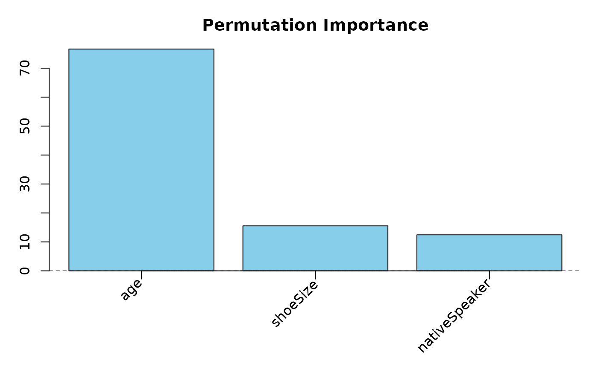
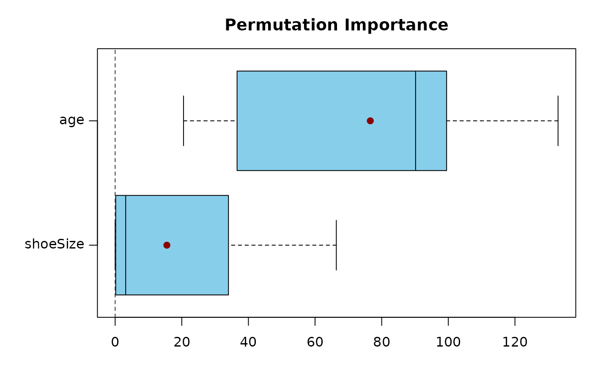
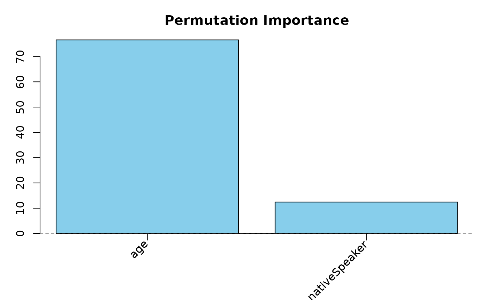
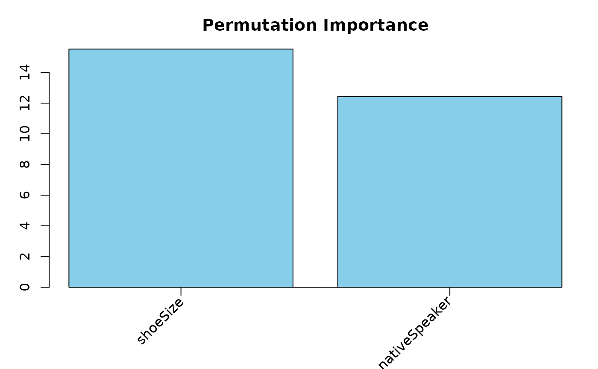

Methods for VarImp Objects
VarImp-methods.RdMethods for computing on VarImp objects..
Usage
# S3 method for class 'VarImp'
plot(x, nVar = length(x$values), type = c("bar", "box", "dot", "rank"),
sort = TRUE, interval = c( "no", "quantile", "sd"),
intervalProbs = c(.25, .75), intervalColor = NULL,
horizontal = FALSE, col = NULL, pch = NULL,
main = NULL, margin = NULL, ...)
# S3 method for class 'VarImp'
print(x, ranks = FALSE, ...)
# S3 method for class 'VarImp'
subset(x, subset, ...)Arguments
- x
an object of the class
VarImp.- nVar
an integer specifying the number of predictor variables that should be included in the plot. The
nVarpredictor variables with the highest variable importance measure are retained.- type
a character string that indicates the type of plot. Must be one of the following: "bar", "box", "dot" or "rank" (see Details).
- sort
a logical that specifies whether the predictors should be ranked according to the importance measures.
- interval
a character string that indicates if, and which type of intervals should be added to the plot. Must be one of the following:
"no","quantile", or"sd"(see Details).- intervalProbs
a numerical vector of the form c(bottom, top), specifying the two quantiles that should be used for the interval. Only meaningful when
interval = "quantile".- intervalColor
a color code or name, see
par.- horizontal
a logical that specifies whether the plot should be horizontal (= importance values on the x-axis. The default is
FALSE.- col
a color code or name, see
par.- pch
Either a single character or an integer code specifying the plotting 'character', see
par.- main
an overall title for the plot: see
title.- margin
a numerical vector of the form
c(bottom, left, top, right), which gives the number of lines of margin to be specified on the four sides of the plot. Seepar.- ranks
a logical specifying whether the (reversed) rankings should be printed instead of the importance values.
- subset
a character, integer or logical vector, specifying the subset of predictor variables.
- ...
additional arguments.
Details
plot gives visualization of the variable importance values. print prints the importance values, or their (reversed) rankings if ranks = TRUE. ranks returns the reversed rankings of the variable importance values. The subset method for VarImp objects returns a VarImp object for only a subset of the original predictors in the random forest.
In plot, the type = "bar" results in a barplot, type = "dot" in a point-plot, type = "rank" in a point-plot with the importance rankings as the plotting 'characters', see ranks. In each of these three options an interval (based on either two quantiles or on the standard deviation of the perTree values) can be added to the plot. type = "box" results in boxplots, and is only meaningful when perTree values are available.
Examples
## Fit a random forest (using cforest)
set.seed(290875)
readingSkills.cf <- party::cforest(score ~ ., data = party::readingSkills,
control = party::cforest_unbiased(mtry = 2, ntree = 50))
## compute permutation variable importance:
set.seed(290875)
permVIM <- permimp(readingSkills.cf)
## print the variable importance values
permVIM
#> nativeSpeaker age shoeSize
#> 12.42492 76.58328 15.52237
print(permVIM, ranks = TRUE)
#> Reversed ranking: 1 denotes the highest value.
#> nativeSpeaker age shoeSize
#> 3 1 2
ranks(permVIM)
#> Reversed ranking: 1 denotes the highest value.
#>
#> nativeSpeaker age shoeSize
#> 3 1 2
## Visualize the variable importance values
plot(permVIM, type = "bar", margin = c(6,3,3,1))

plot(permVIM, nVar = 2, type = "box", horizontal = TRUE)

## note the rankings
plot(subset(permVIM, c("age", "nativeSpeaker")), intervalColor = "pink")

plot(subset(permVIM, c("shoeSize", "nativeSpeaker")), intervalColor = "pink")
